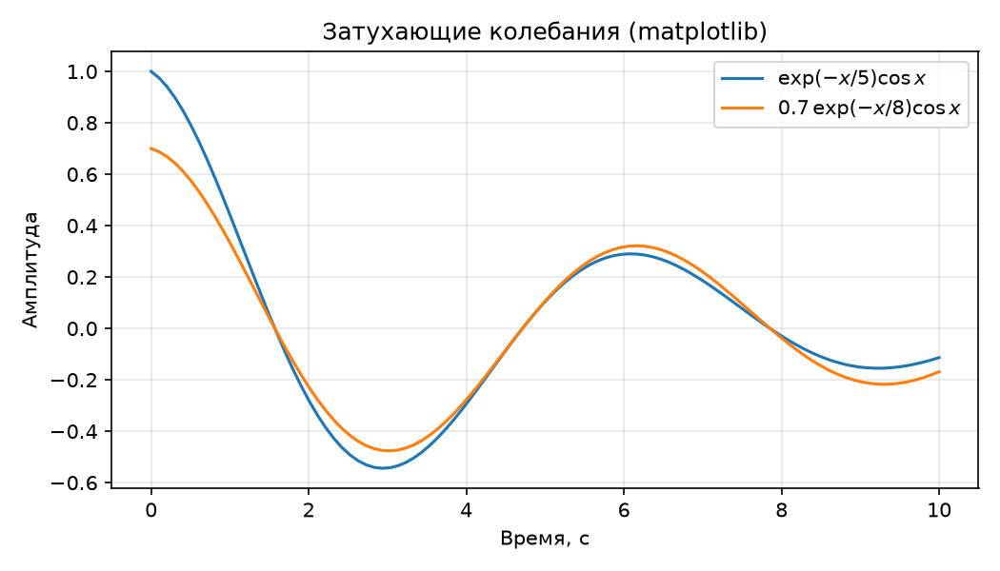

Стресс-тест научного контента¶
Страница демонстрирует поддержку научных элементов генератором MkDocs (тема Material).
Вариант этой же страницы на Sphinx.
Формула¶
Затухающие колебания описываются уравнением формула (1):
где \(A\) — начальная амплитуда, \(\gamma\) — коэффициент затухания, \(\omega\) — круговая частота.
Ссылка на формулу: см. формулу (1) выше.
Таблица с объединёнными ячейками¶
| Генератор | Время сборки, с | Размер, КБ | |
|---|---|---|---|
| MkDocs | холодная | 3.2 | 1240 |
| инкрементальная | 1.1 | ||
| Sphinx | холодная | 4.8 | 1680 |
| инкрементальная | 1.9 | ||
| Итого | 2920 | ||
Статический график¶

Интерактивный график¶
Листинг кода¶
Цитирование¶
MkDocs не поддерживает BibTeX без плагинов2, поэтому список литературы оформлен вручную: методика публикации описана в работе [1], а базовые возможности LaTeX — в [2]. Источник по matplotlib — [3].
- Ивсов Д. С., Ковалёв М. А. Методы публикации результатов научных исследований в сети Интернет // Научно-технические ведомости СПбГПУ. 2021. Т. 27, № 3. С. 45–58.
- Knuth D. E. The TeXbook. Reading, MA: Addison-Wesley, 1986.
- Hunter J. D. Matplotlib: A 2D Graphics Environment // Computing in Science & Engineering. 2007. Vol. 9, No. 3. P. 90–95.
Двухколоночный блок¶
Текст слева: статические генераторы позволяют собирать научно-технические сайты без серверной части. MkDocs с темой Material даёт готовую навигацию и поиск, а формулы и графики подключаются через расширения и встраиваемые фрагменты.
Сноски и перекрёстные ссылки¶
Сноска с дополнительным пояснением1. Подробное описание методики измерений см. в разделе «Методика».